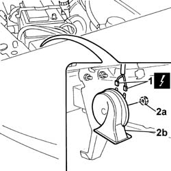
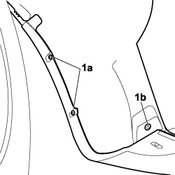
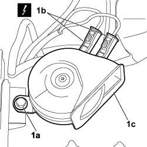

5550B30 l/h or r/h horn (one) - r+r
- Path
- Procedures > 55 ELECTRICAL EQUIPMENT > 5550 MANOEUVRING AND WARNING SIGNALS > 5550B horns > 5550B30 l/h or r/h horn (one) - r+r
- Kind
- repair procedure (removal / refitting; the operation number is the code)
- Applies to
- all engines; all production periods
- Interactive page
- https://sloeber94.github.io/elrnDB-fDbl/en/#/2584950
Applies to: engines: 1.2 8v, 1.6 16v, 1.3 JTD 16V, 1.9 JTD 8V, 1.9 DIESEL; all production periods
 Removing
Removing
 Refitting
RefittingDisconnect the battery negative terminal.
1. Disconnect the horn's electrical connector.
 | Name | Connector |
|---|---|---|
1 | Single-tone horn |
2. Undo the fixing nut (2a) and remove the horn (2b).

Applies to: engines: 1.2 8v, 1.6 16v, 1.3 JTD 16V, 1.9 JTD 8V, 1.9 DIESEL; all production periods
Refitting
RemovingFit the horn and secure it to the bodywork with the relevant nut.
Connect the horn's electrical connector.
| Name | Connector |
|---|---|---|
- | Single-tone horn |
Connect the battery negative terminal.
Applies to: engines: 1.4 8v, 1.6 16v, 1.3 JTD 16V, 1.9 JTD 8V; production: da 12/03; only with equipment: MY 2005
Removing
Refitting- Position the vehicle on the lift.
- Turn the ignition key to the OFF position.
- Lift the bonnet
- Disconnect the negative battery terminal.
Description | Connector | |
|---|---|---|
BATTERY |
1. Undo the bolts (1a) and (1b) fixing the wheel arch liner to the bumper.

Applies to: engines: 1.4 8v, 1.6 16v, 1.3 JTD 16V, 1.9 JTD 8V; production: da 12/03; only with equipment: MY 2005
1. Move the wheel arch liner, undo the fixing bolt (1a), disconnect the electrical connection (1b) and remove the horn (1c) from the vehicle.
Description | Connector | |
|---|---|---|
1b | SINGLE-TONE HORN |

Applies to: engines: 1.4 8v, 1.6 16v, 1.3 JTD 16V, 1.9 JTD 8V; production: da 12/03; only with equipment: MY 2005
Refitting
Removing- Check that the horn is not damaged.
- Position the horn in its seat and tighten the nut
- Connect the electrical connection for the horn.
Description | Connector | |
|---|---|---|
SINGLE-TONE HORN |
- Tighten the bolts fixing the wheel arch liner to the bumper.
- Connect the negative battery terminal.
Description | Connector | |
|---|---|---|
BATTERY |
- Check that the horn is working.